and
and  are unknowns. However, the equations can be linearized with the substitution
are unknowns. However, the equations can be linearized with the substitution
The system of equations for inverse modeling, formulated in the previous section, is nonlinear because it includes the product of unknowns of the form 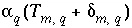
, where
and
are unknowns. However, the equations can be linearized with the substitution
The mole-balance equations now become
The alkalinity balance equation can be written as
The electron-balance equation is unchanged. The charge-balance equation can be rewritten into
The water-balance equation is unchanged. The isotope-balance equation 139 is
The relation among carbon(+4), pH, and alkalinity is
and lastly, the inequality constraints become
All of these equality and inequality equations are linear in the unknowns  and
and  , and once the values of all of the
, and once the values of all of the  and
and  are known, the values of the uncertainty terms
are known, the values of the uncertainty terms  can be determined.
can be determined.
This formulation of the inverse-modeling problem produces a series of linear equality and inequality constraints, which are solved with the algorithm developed by Barrodale and Roberts (1980). Their algorithm performs an L1 optimization (minimize sum of absolute values) on a set of linear equations subject to equality and inequality constraints. The problem can be posed with the following matrix equations:
The first matrix equation is minimized in the sense that 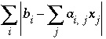
is a minimum, where
i
is the index of rows and
j
is the index for columns, subject to the equality constraints of the second matrix equation and the inequality constraints of the third matrix equation. The method will find a solution that minimizes the objective functions ( ) or it will determine that no feasible model for the problem exists.
) or it will determine that no feasible model for the problem exists.
Initially,  is set to minimize 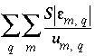
, where 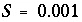
is a scaling factor that limits the size
is set to minimize 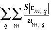
, where 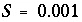
is a scaling factor that limits the size
of the coefficients in the
A
matrix;
A
is a diagonal matrix with elements 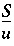
, and 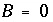
. The equality constraints ( ) include all mole-balance, alkalinity-balance, charge-balance, electron-balance, and water-balance equations and all inorganic carbon-alkalinity-pH relations. The inequality constraints (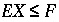
) include two inequalities for each of the
) include all mole-balance, alkalinity-balance, charge-balance, electron-balance, and water-balance equations and all inorganic carbon-alkalinity-pH relations. The inequality constraints (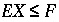
) include two inequalities for each of the  's, one for positive and one for negative (to account for the absolute values used in the formulation), an inequality relation for each mixing fraction for the aqueous solutions, which forces each mixing fraction to be nonnegative, and an inequality relation for each phase that is specified to dissolve only or precipitate only. Application of the optimization technique will determine whether any inverse models exist that are consistent with the constraints.
's, one for positive and one for negative (to account for the absolute values used in the formulation), an inequality relation for each mixing fraction for the aqueous solutions, which forces each mixing fraction to be nonnegative, and an inequality relation for each phase that is specified to dissolve only or precipitate only. Application of the optimization technique will determine whether any inverse models exist that are consistent with the constraints.
Thus, one set of mixing fractions and phase mole transfers (plus associated  's) that satisfy the constraints may be found. Ignoring the values of the
's) that satisfy the constraints may be found. Ignoring the values of the  's and redox mole transfers (
's and redox mole transfers ( ), let the set of nonzero
), let the set of nonzero  and 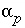
(mixing fractions and phase mole transfers) uniquely identify an inverse model. The magnitude of the
and 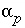
(mixing fractions and phase mole transfers) uniquely identify an inverse model. The magnitude of the  's is not important in the identity of an inverse model, only the fact that the
's is not important in the identity of an inverse model, only the fact that the  's are nonzero in a certain set is considered. (At this point, little significance should be placed on the exact mole transfers that are found, only that it is possible to account for the observations using the aqueous solutions and phases of the inverse model.) But could other sets of aqueous solutions and phases also produce feasible inverse models? An additional algorithm is used to find all of the unique inverse models.
's are nonzero in a certain set is considered. (At this point, little significance should be placed on the exact mole transfers that are found, only that it is possible to account for the observations using the aqueous solutions and phases of the inverse model.) But could other sets of aqueous solutions and phases also produce feasible inverse models? An additional algorithm is used to find all of the unique inverse models.
Assuming P phases and Q aqueous solutions, we proceed as follows: If no model is found when all Q aqueous solutions and P phases are included in the equations, we are done and no feasible models exist. If a model is found, then each of the phases in the model is sequentially removed and the remaining set of phases and aqueous solutions is tested to see if other feasible models exist. If no model is found when a particular phase is removed, the phase is retained in the model; otherwise, the phase is discarded. After each phase has been tested and possibly discarded, the phases that remain constitute a "minimal" model, that is, to obtain a feasible model none of the phases can be removed. Three lists are kept during this process: each feasible model is kept in one list, each infeasible model is kept in another list, and each minimal model is kept in a third list.
Next, each combination of P-1 phases is tested for feasible models in the following way. If a trial model with Q aqueous solutions and P-1 phases is a subset of a model in the infeasible- or minimal-model list, the trial model is skipped because it must be either infeasible or a previously identified minimal model. If only minimal models are to be found ( -minimal in INVERSE_MODELING data block), the trial model is skipped if it is a superset of a model in the minimal-model list. Otherwise, the inverse problem is formulated for the trial model and solved using the set of aqueous solutions and the P-1 phases in the same way as described above, maintaining the three lists during the process. Once all sets of P-1 phases have been tested, the process continues with sets of P-2 phases, and so on until the set containing no phases is tested or until, for the given number of phases, every trial model is either a subset of a model in the infeasible- or minimal-model list.
At this point, the entire process is repeated using each possible combination of one or more of the Q aqueous solutions. Although the process at first appears extremely computer intensive, most sets of phases are rapidly eliminated by subset and superset comparisons with models in the three lists. The number of models that are formulated and solved by the optimization methods are relatively few. Also the process has the useful feature that if no feasible models exist, this is determined immediately when the optimization procedure is invoked the first time. For PHREEQC, during all of the testing, whenever a feasible model is found, it is printed to the output device or optionally, only the minimal models are printed to the output device.
An alternative formulation of the objective functions can be used to determine the range of mole transfer for each aqueous solution and each phase that is consistent with the specified uncertainty limits. For the "range" calculation (
-range in
INVERSE_MODELING data block), the equations for a given model are solved twice for each aqueous solution and phase in the model, once to determine the maximum value of the mixing fraction or mole transfer and once to determine the minimum value of the mixing fraction or mole transfer. In these calculations, the  's are not minimized, but instead, the single objective function for maximization is
's are not minimized, but instead, the single objective function for maximization is
where  refers to either
refers to either  or
or  , and
M
is a large number. By default, the value of
M
is 1000. The optimization method will try to minimize the difference between
, and
M
is a large number. By default, the value of
M
is 1000. The optimization method will try to minimize the difference between  and 1000 for maximization and between
and 1000 for maximization and between  and -1000 for minimization. It is possible that the mixing fraction for a solution (
and -1000 for minimization. It is possible that the mixing fraction for a solution ( ) could exceed 1000 in an evaporation problem. In this case, the method would fail to find the true maximum for 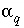
, and instead find a value closest to 1000. This error can be remedied by choosing a larger value for 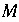
. The value of
) could exceed 1000 in an evaporation problem. In this case, the method would fail to find the true maximum for 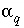
, and instead find a value closest to 1000. This error can be remedied by choosing a larger value for 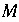
. The value of  may be changed with the
-range identifier in the
INVERSE_MODELING data block.
may be changed with the
-range identifier in the
INVERSE_MODELING data block.
For data input to PHREEQC, identifiers in the INVERSE_MODELING data block are used for the selection of aqueous solutions ( -solutions), uncertainty limits ( -uncertainties and -balances), reactants ( -phases), mole-balance equations ( -balances), range calculations ( -range) and minimal models ( -minimal). Aqueous solution compositions are defined with the SOLUTION, SOLUTION_SPREAD, or SAVE data block and reactants must be defined with PHASES or EXCHANGE_SPECIES data blocks (see "Description of Data Input").